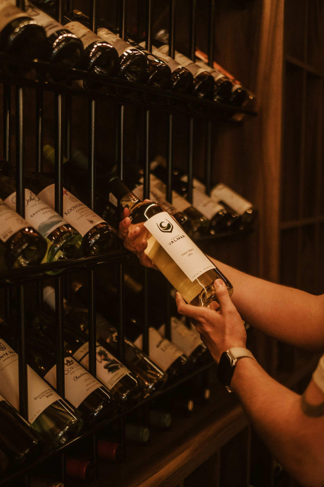

Engagement 1 · Restaurant cellar build · Logroño · 2024
Casa Ferrer: a cellar that stopped leaking money
- The ask
- A 34-seat restaurant with a good kitchen and a famous wine list, storing €9,000 of wine in a warm storeroom behind the ovens. The owner, Marta Jiménez, was writing off bottles every month and buying trophies her storage was quietly cooking.
- What I did
- First the room, not the wine: storage moved to a rented cellar two streets away at a steady 13°C, for less per month than the write-offs. Then the list was rebuilt around forty bins whose windows matched a ninety-day turnover — nothing stocked that would peak before it could be poured. I refused two trophy bins she asked for, including a gran reserva I judged two years short of its peak, and sold her the older, ready vintage of the same wine instead, at a lower price.
- Outcome
- Spoilage write-offs fell from €310 a month to €40 within a year. The list now turns over completely each season, and Casa Ferrer is one of the six restaurant cellars kept from this book — I re-taste and re-window its stock every September.
“She refused to sell us the wine we asked for, and sold us the one we needed. Our cellar stopped leaking money the month she took it over.”
